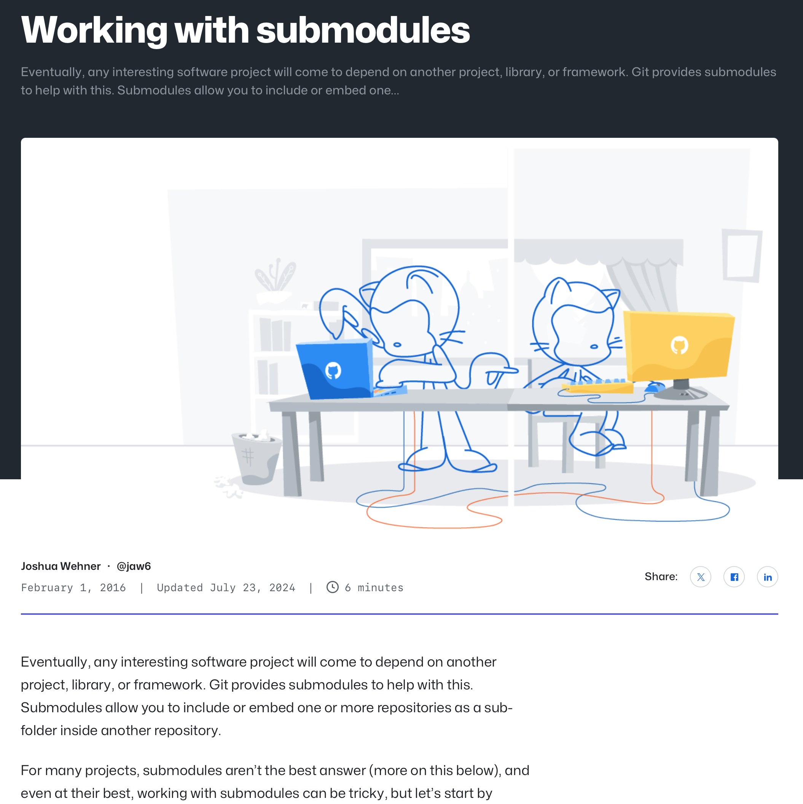

Working with Submodules

With my recent site rewrite, I wanted my site to be able to be in one directory, with the raw (markdown/yaml) content in one directory, and the final, generated html to be in another, yet with the code to process it from one to the other, to be in the parent directory and referencing both. I also wanted the final HTML to be in its own repository, so I could simply pull it onto my server, without the rest of it coming along with it. I thought a git submodule approach would be perfect for that, but had no clue how to set that up. This article helped me.
- Prior: Playdate Pulp
- Next: New Text File in Finder